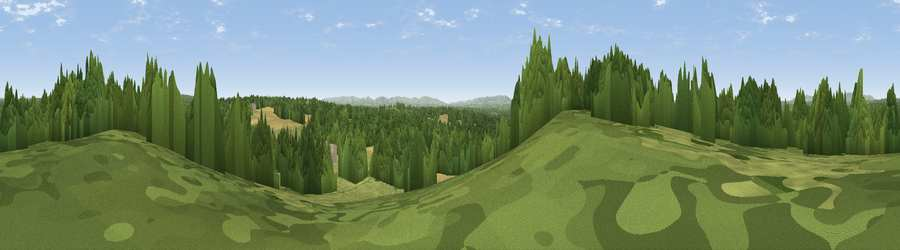

Viewpoint near Nuthurst
#36255 in England · top 71% of its area beats it · near NuthurstThe view, rendered

A 360° render of this exact spot computed from the terrain model, tree cover and land cover — summer colours, afternoon light, calibrated against photographs of famous viewpoints. Real trees, hedges and buildings will differ in detail.
The panorama
Grey silhouette: terrain skyline in each direction (720 bearings, Earth curvature and refraction included). Dashed green: skyline with trees (+15 m) and buildings (+8 m) as obstacles. Blue strip: how far the ground is visible on each bearing.
Where the view opens
Wedge length = distance to the farthest visible ground on that bearing (vegetation-aware). Rings at 10, 25 and 50 km.
What fills the view
46% grassland · 44% woodland · 8% cropland · 2% built-up
Angular shares of the visible panorama (visual magnitude), not map area. Landscape diversity 0.44 (0–1 Shannon).
Key numbers
More beautiful places nearby
The staircase of upgrades: each row has a higher view potential than everything closer. Driving times are estimates from straight-line distance, calibrated against real road routing — check an actual route before setting out.
| Place | Direction | Drive | Score |
|---|---|---|---|
| Hampshire Hill | SW · 1 km | ~2 min | 49.1 |
| Sharpenhurst Hill | W · 6 km | ~12 min | 54.1 |
| Viewpoint near Kingsfold | NNW · 8 km | ~16 min | 55.0 |
| Viewpoint near Capel | NNW · 15 km | ~27 min | 55.6 |
| Wolstonbury Hill | SSE · 16 km | ~29 min | 79.6 |
| Chanctonbury Ring | SSW · 16 km | ~29 min | 87.0 |
| Firle Beacon | SE · 36 km | ~55 min | 88.9 |
| Viewpoint near Niton | SW · 87 km | ~111 min | 89.2 |
51.03511, -0.29600 · source: screening · position refined by local search. Computed location — check access rights before visiting.